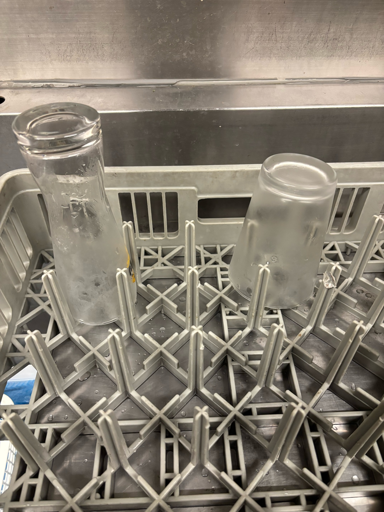
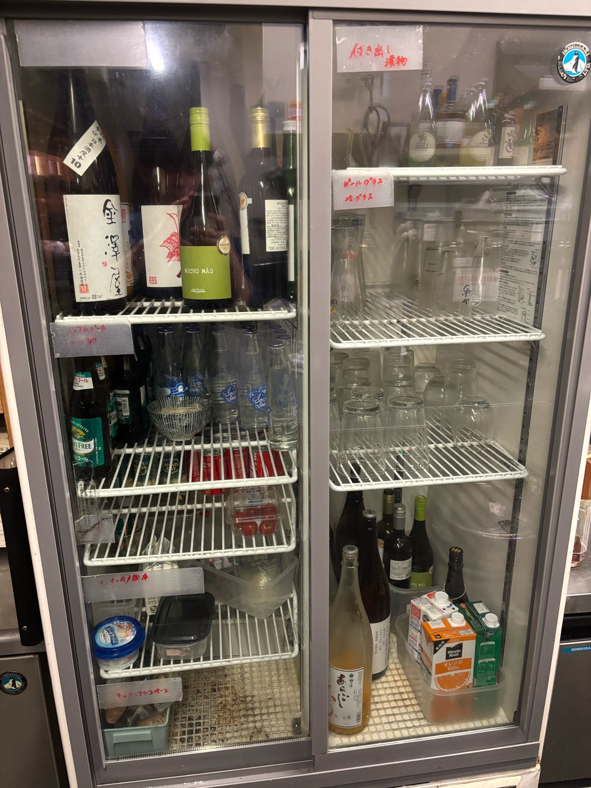

1
グラスの洗い方
⚠ 注意
写真の様にグラスを食洗のカゴに刺す（差込みすぎると圧で割れるので注意）

食洗機カゴへの刺し方

食洗機カゴ
その後、製氷機上のスペースで粗熱を取った後それぞれのグラスの場所に直す

グラス収納冷蔵庫
- グラスの収納場所は右側の上から二段目にビール、その下にその他のグラス
- 小さめのグラスは製氷機周りに直す
⚠ 注意
熱いグラスにドリンクは絶対に入れないでください